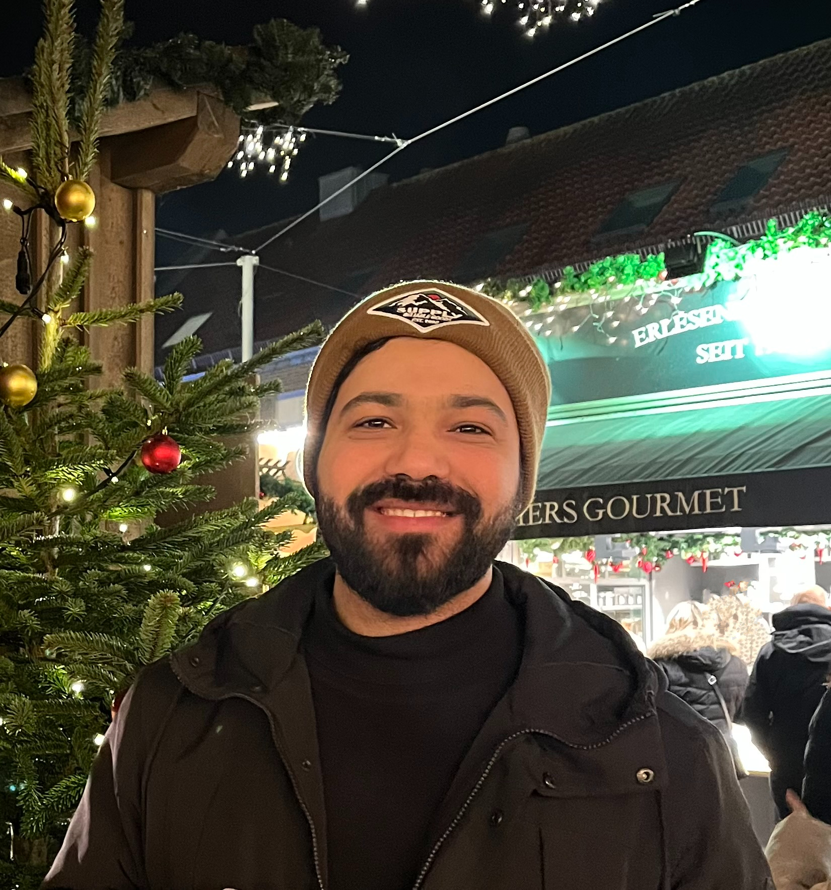
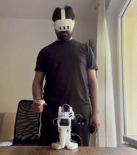
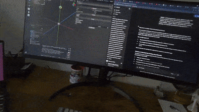
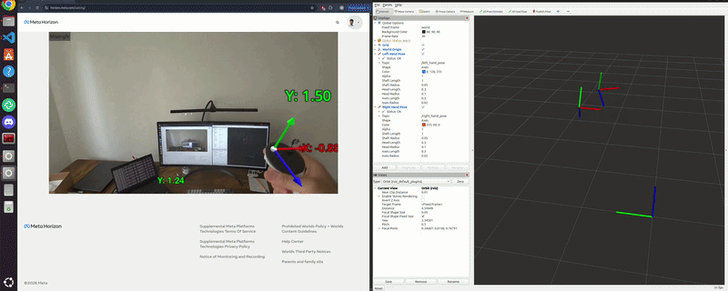
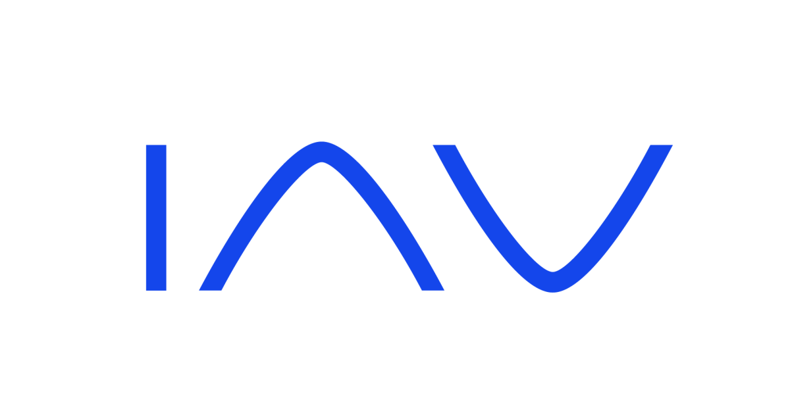

Mahmoud Maan
Robotics & AI | Physical AI | M.Sc. Robotics and Autonomous Systems
I am an AI Robotics and Perception Engineer with intrests in perception, embodied AI, and autonomous systems. I hold a M.Sc. in Robotics and Autonomous Systems from the University of Lübeck. Through research and project work, I have gained experience in multimodal AI, robotics, autonomous driving, and edge deployment on NVIDIA Jetson platforms. I enjoy building AI solutions real-world robotics applications.

Projects

VR Teleoperation for SO-101 — VRTeleop
VR teleoperation system for the SO-101 robot arm. A Meta Quest 3 Godot XR app streams 6-DoF controller poses to a Python IK server that drives the arm in real time, streams camera feeds back to the headset, and records LeRobot datasets.
View Project →
Imitation Learning with VLA Models
Fine-tuned SmolVLA and ACT models on the SO-101 robotic arm for pick-and-place tasks using human teleoperation demonstrations, exploring Vision-Language-Action models for imitation learning.
View Project →
6D Pose Estimation of QR Codes using Godot 4 and OpenXR
Meta Quest 3 passthrough demo that uses OpenXR marker tracking to estimate QR code position and orientation, then visualizes each marker in Godot with RGB coordinate axes and live world-space coordinates.
View Project →
VR Hand Pose Tracking to ROS 2 Bridge
Meta Quest 3 XR application built in Godot 4.6 that streams real-time hand/controller tracking data over WebSocket to a ROS 2 pipeline, remapping coordinate frames and publishing live hand poses visualised in RViz2.
View Project →Experience
AI and Robotics Research Engineer
KIA Group - TH Lübeck | Lübeck, Germany
Fine-tuning and deploying Vision-Language-Action models for robotic manipulation, developing RAG systems, and supervising research projects.
Graduate Research Student
Universität zu Lübeck | Lübeck, Germany
Deployed and optimized object detection models on edge devices and conducted research on neural network quantization techniques.

Master Thesis Student
IAV Fahrzeugsicherheit GmbH | München, Germany
Compared vision transformers and CNNs for automotive instance segmentation and fine-tuned foundation models for synthetic datasets.
Machine Learning/Computer Vision Intern
Robert Bosch GmbH | Stuttgart, Germany
Developed an AI-powered tool for automated solder joint analysis in automotive ECUs using semantic segmentation and model deployment.
Robotics Engineer
CUBII Industrial Solutions | Cairo, Egypt
Developed software and HMI visualizations for real-time control of automated packaging machines and designed hardware control panels.
Education
M.Sc. Robotics and Autonomous Systems
University of Lübeck, Germany
Major Subjects: Robot Learning, Perception for Autonomous Vehicles, Reinforcement Learning, Computer Vision, Deep Learning, Vehicles Dynamics and Control
B.Sc. Mechatronics Engineering
Mansoura University, Egypt
Major Subjects: Dynamics and Control of Robots, Advanced Robotics, Computer Vision, Artificial Intelligence, Control System, Modeling and Simulation
Contact
Whether you want to collaborate on robotics projects or discuss computer vision and physical AI systems, my inbox is always open.